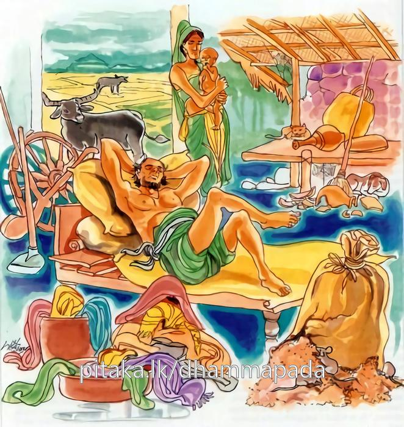

18-4 ලාලුදායී ස්ථවිරයන් වහන්සේ
මෙම කතාව ධම්මපද අටුවාවෙන් ද කියවන්න.
අසජ්ඣායමලා මන්තා අනුට්ඨානමලා ඝරා
මලං වණ්ණස්ස කොසජ්ජං පමාදො රක්ඛතො මලං.
හදාළ ශාස්ත්රයෝ නොපිරුවීම මල කොටැතියහ. ගෘහයෝ වීර්ය්ය නොකිරීම මල කොට ඇත්තාහ. ශරීරවර්ණයට කුසීත බව මලයෙක. (කෙත්වත් ඈ) රක්නාහට ප්රමාදය මලයෙක (කිලිටෙක).

බුදුරජානන් වහන්සේ සැවැත් නුවර වැඩවසන දවස්හි එහි පස්කෙළක් පමණ ආර්ය්යශ්රාවකයේ විසූහ. ඔවුහු පෙරවරුයෙහි දන්පින්කම් කොට පස්වරුයෙහි ගිතෙල් තලතෙල් මී උක්හකුරු හා සිවුරුපිළී ඈ ගෙණ විහාරයට ගොස් බණ අසන්නෝ ය. බණ අසා පෙරළා යන ගමනේදී සැරියුත්-මුගලන් දෙනමගේ ගුණ කියමින් යන්නාහ. මේ කතාව ඇසූ ලාලුදායී ස්ථවිර තෙමේ ඔවුන් ගෙන්වා “හොඳයි, මොවුන්ගෙන් බණ අසා තමුසේලා මෙසේ ගුණ කියමින් යන්නහුය, මාගෙන් බණ ඇසූදාට මා ගැණ කුමක් කියන්නහු ද? කියන්නට යමෙක් ඉතිරි වේ දැ?”යි ඇසී ය. ඒ මිනිස්සු ලාලුදායී තෙරුන් කී මේ කතාව අසා “මෙසේ කියන මොහු ද ධර්මකථිකයකු විය යුතු ය, අප මොහුගෙන් ද බණ ඇසිය යුතු ය”යි දවසක් දන් දී තෙරුන් වෙත ගොස් “ස්වාමීනි! අද අප බණ අසන දවස ය, අද අපි සඞ්ගයාට දන් දුනිමු, ඔබවහන්සේ අද අපට දහම් දෙසන්නට ඕනෑ ය”යි දහම් දෙසන්නට ආරාධනා කළහ. ඔහු ද ඒ ආරාධනාව පිළිගත්තේ ය. දහම් දෙසන වේලාව පැමිණි කල්හි ඔවුන් තෙරුන් වෙත ගොස් “ස්වමීනි! දැන් දහම් දෙසන වේලාව ය, එහෙයින් දහම් දෙසන්නට වඩිනු මැනැවැ”යි දන්වා සිටියහ. ලාලුදායී ස්ථවිර, විසිතුරු විජිනිපතක් අතට ගෙණ බණ අසුන් අරාහිඳ විජිනිපත සලමින් එක් ම බණපදයකුත් සිතාමතා ගත නො හී “මම පෙළ කියන්නෙමි, අනිකකු ලවා එහි අරුත් කියවා ගණිවු”යි බණ අස්නෙන් බිමට බැස්සේ ය. එවිට බණ අසන්නට රැස් ව හුන් මිනිස්සු අනෙකකු ලවා බණ කියවා ගෙණ නැවැතත් පෙළ කියවා ගන්නට ලාලුදායී තෙරුන් බණඅස්නට නැංවූහ. එවර ද ඔහු කියයුතු කිසිවක් නො දැක “මම රෑ බණ කියන්නෙමි, අනෙකකු ලවා පෙළ ද කියවා ගණිවු”යි බණ අස්නෙන් නැගී ගියේ ය. ඔවුහු තෙරුන් කී ලෙසට අනෙකකු ලවා පෙළ ද කියවා ගෙණ “රෑ බණ කියන්නැ”යි තෙරුන් බණ අස්නට නංවාලූහ. රෑත් බණ කියා ගත නො හැකි වූ ඔහු “මම එළිවන යාමයෙහි කියන්නෙමි, දැන් අනෙකකු ලවා කියවා ගන්නැ”යි කී ය. ඒ වර උපාසකවරු රෑ අනෙකකුලවා කියවා ගෙණ එළිවන යාමයෙහි තෙරුන් කැඳවූහ. ඔහුට ඒ වරත් බණ කියන්නට නො හැකි වි ය.
එ වේලෙහි බණහලෙහි මහත් ගාලගොට්ටියෙක් නැගින. රැස්ව හුන් මිනිස්සු ද ගල් කැට දඬු මුගුරු ආදිය ගෙණ “මෝඩයා! ඔබ සැරියුත් මුගලන් දෙනමගේ ගුණ කියනු ඉවසා ගත නො හී මමත් බණ කියන්නෙමි, මාගෙන් ද බණ අසවු, කියා අවුත් දැන් කුමක් හෙයින් බණ නො කියනු දැ”යි තැති ගන්වා පන්නා දැමූහ. ඔවුහු පලා යන්නා වූ ඔහු ලුහුබැන්දාහ. ලාලුදායී තෙර පලා යනුයේ වැසිකිළිවළෙක වැටුනේ ය. ඒ අතර රට වැස්සෝ “අද ලාලුදායී, සැරියුත් - මුගලන් තෙරුන්ගේ ගුණ කියන කල්හි එය ඉවසා ගත නො හැකි ව ‘මමත් බණ කියන්නට දත් ධර්මකථිකයෙක්මි’යි තමන්ගේ උගත්කම් පෙන්වා මිනිසුන් මුළා කොට, ඔවුන් ද පිදිවිලි ගෙණ බණ අසන්නට රැස් ව හුන් කල්හි සතර වරක් ම බණ අසුන් අරා හිඳ කියයුතු කිසිත් බණක් නො දැන අපගේ උතුම් සැරියුත් - මුගලන් තෙරුන් හා එකට එක කරන්නට ආවහු’යි කැට දඬු මුගුරු ආදාය ගෙණ තැති ගන්වා පන්නා හරිණලදුව වැසිකිළිවළෙක වැටුනේය”යි රට සෑම තැන කතා කරන්නට වූහ. බුදුරජානන් වහන්සේ භික්ෂූන් අමතා, “මහණෙනි! රට වැසියා අතර ලාලුදායී ගැණ කතාවක් පැතිර ගොස් තිබෙනු අසන්නට ලැබේ, ඒ කිමැ?”යි අසා වදාළ සේක. භික්ෂූහු එ පුවත සැළකළහ. “මහණෙනි! උදායී අසුචිවළ වැටුනේ අද පමණක් නො වේ, පෙරත් අසුචිවළ වටුනේ ය”යි එ පුවත දක්වන සේක්:
“සබඳ! මම සිවුපා - සබඳ! නො ද සිවුපායෙහි,
සිහ! එව නවාතැන් ගණු - කිම බියව පැන යන්නෙහි?,
.
අපිරිසිදු කුණු ලොම් - දුගඳ අතියෙහි හුරූ,
මා හා යුද කැමැති නම් - දිනුම් දෙන්නේම් තාහට”යි
මේ ජාතකය විස්තර විසින් වදාළ සේක. ශාරීපුත්ර මහාස්ථවිරයන් වහන්සේ එදා සිංහ වූහ. ලාලුදායී ඌරු විය. නැවැත බුදුරජානන් වහන්සේ “මහණෙනි! ලාලුදායී යම්තම් බණදහමක් උගත්තේ ය, එහි ද පුන පුනා හැදරීමෙක් නො වී ය, ස්වල්ප විසිනුදු උගත් යමෙක් වේ නම් එය නො හැදෑරීම එයට මලැ”යි වදාරා මේ ධර්මදේශනාව කළ සේක.
අසජ්ඣායමලා මන්තා අනුට්ඨානනමලා ඝරා,
මලං වණ්ණස්ස කොසජ්ජං පමාදො රක්ඛතො මන්ති.
හදාළ ශාස්ත්රයෝ නො හැදෑරීම මල කොට ඇතියහ. ගෘහයෝ වීර්ය්යය නො කිරීම මල කොට ඇතියහ. ශරීරවර්ණයට කුසීත බව කිලිටෙක. යමක් රක්නාහට ප්රමාදය කිලිටෙක.
අසජ්ඣායමලා මන්තා = හදාළ ශාස්ත්රයෝ නො හැදෑරීම මල කොට ඇතියහ.
ශාස්ත්රය - විද්යාව - වෙදය - වෙදගීතය - රහස්සාකච්ඡාව - යක්ෂාදීන්ගෙන් වන උවදුරු වළකාලීම පිණිස තන්ත්රාදියෙහි දැක් වූ අක්ෂරරචනාවිශේෂය හා සූසැට ශිල්ප අතුරෙහි හෙන යම් එක් ශිල්පයක්, මන්ත්ර විසින් ගන්නැ යි ධර්මශාස්ත්රයෙහි දක්වන ලද්දේ ය.
තමන් මැනැවින් උගත් ධර්මශාස්ත්රශිල්පයෝ ආසේවන - භාවන - සජ්ඣායන - අනුයෝග - විස්සජ්ජන විසින් පුන පුනා නො හැදෑරීමෙන් නො විමසීමෙන් වැඩකට ගත නො හැකිලෙසින් මල බැඳී ගන්නාහ. අමතක ව යන්නාහ. ඒ මල බැඳුනු උගත් කම වැඩ පිණිස නො වැටෙන්නේ ය. එහෙයින් ඒ උගත් ශාස්ත්රයෝ අසජ්ඣයාමල යි වදාළ සේක.
අනුට්ඨානමලා ඝරා = ගෘහයෝ වීර්ය්ය නො කිරීම මල කොට ඇතියහ.
මිනිසුන් විසින් වාසය පිණිස ගොඩ නගා ගත් ගෙවල් ඝර නම් වෙත්. [1] ගෙයි වසන්නෝ අලසයෝ වෙත් නම් ගෙයි කැඩුම් බිඳුම් නැවැත නැවැත පිළිසකර නො කෙරෙත් නම් කල් යන කල්හි ඒ ගෙය වඩවඩාත් දිරුම් කඩට යන්නේ ය. වාසයට නො සුදුසු වන්නේ ය. නිශ්ශ්රීක වන්නේ ය. ගෙයි වසන්නෝ ද හැම යසසින් පිරිහෙන්නෝ ය. ඇද වැටෙන්නෝ ය. එහෙයින් ගෙයි වසන්නෝ උත්ථානවීර්ය්ය රහිත වූවාහු නම් නැගී සිටීමෙහි වීර්ය්යයෙන් තොර වූවාහු නම් එබන්දන් වසන ගෘහයෝ අනුට්ඨානමල නම් වෙත්. ගෙයිවැස්සෝ ගැණෙන්නෝ උපචාර විසිනි.
මලං වණ්ණස්ස කොසජ්ජං = සිරුරුපැහැයට කුසීතබව කිලිටෙක් වේ.
සිරුරුපැහැය නැසී යෑමට කුසීතබව කරුණු වන්නේ ය. ඇතැම් ගිහි-පැවිද්දෝ අලසකම නිසා සුදුසු කාලයෙහි නෑම් සේදීම් නො කරන්නෝ ය. ඩහදියෙන් දූවිලියෙන් කිලිටි වූ සිරුරු ඇතිව රෙදිපිළී ඇතිව වසන්නෝ ය. සුදුසු වේලෙහි ඌදර්ධවවිරෙචන - අධොවිරෙචනාදිය නො කරන්නෝ ය. හිස රැවුළු නො සිඳ වන්නෝ ය. නියපොතු කපා හැර අත්පා පිරිසිදු නො කරන්නෝ ය. දත් පිරිසිදු නො කරන්නෝ ය. මෙබන්දන් ඇඟ ගැටී හමන වාතයෝ දුගඳින් මුසු වූවෝ ආසන්නයෙහි සිටිය වුන්ගේ හිස්මොළ කකිය වන්නෝ ය. එහෙයින් බුදුරජානන් වහන්සේ කුසීතබව සිරුරුපැහැයට කිලිටැයි වදාළ සේක. [2]
පමාදො රක්ඛතො මලං = රක්නාහට ප්රමාදය කිලිටෙක් වේ.
කෙත්වත් ගේදොර ගෙරිසරක් මිලමුදල් ඈ රකින්නෝ පමායෙන් කල් ගෙවත් නම් එහි රැක්මෙහි උත්සාරහිත වෙත් නම් ඒ හැම නැසී යනු ඉදිරියෙහි නො වැඩෙනු එකාන්ත ය.
පමාබවෙන් කල් යවන්නහුගේ මේ හැම දැයෙක් නැසීමට යන්නේ ය. ගෙරිසරක් නො තොට වැටීමෙන් වගවලසුන්ට අසුවීමෙන් සොරුන්ගේ පැහැර ගැන්මෙන් අන්හු අයත් කෙත් වතුවලට වැදීමෙන් විනාශයට යනු නො වැළැකිය හැකි ය. තෙමේ ද දඩගැසුම් ඇණුම් බැණුම්වලට ලක් වන්නේ ය. එසේ ම පැවිද්දෝත් සදොර නො රක්නෝ කෙලෙසුන්ට යටත් ව ශාසනික ගුණධර්මයන්ගෙන් ඇද වැටෙන්නෝ ය. එහෙයින් ප්රමාදය විනාශය එළවන බැවින් මලයෙකැයි වදාළ සේක. [3]
ධර්මදේශනාවගේ අවසානයෙහි බොහෝදෙන සෝවන්ඵලාදියට පැමිණියාහු ය.
ලාලුදායීස්ථවිර වස්තුව නිමි.